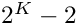
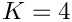
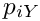
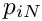
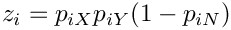
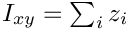

|
Legofit
infers population history from nucleotide site
|
Legofit is a computer package that uses counts of nucleotide site patterns to estimate the history of population size, subdivision, and gene flow. The package consists of the following programs
ms2sim or msprime.These programs all operate on "nucleotide site patterns", which are summary statistics not influenced by recent population size but rich in information about ancestral populations. This section will define site patterns and explain how legofit tabulates their counts, and estimates expectations.
Consider a sample consisting of one haploid genome drawn from each of 3 populations, X, Y, and Z. Suppose that, at a given nucleotide site, the derived allele is present in the genomes from X and Y but not that from Z. If so, then this nucleotide position will be said to exhibit the "*xy* site pattern." We ignore cases in which the derived allele is present in none of the samples or in all of them. By default (without the -1 argument of legosim and legofit), we also ignore "singleton site patterns"—those in which the derived allele appears only once. In other words, we consider only polymorphic, non-singleton site patterns. For the special case of the 3-population sample just described, there are only 3 such site patterns: xy, xz, and yz.
In the general case, with samples from K populations, the number of site patterns (including singletons) is . For example, there are 14 site patterns in a sample involving  populations. The table below shows data from a sample involving 4 populations, X, Y, N, and D.
SitePat E[count]
x 528808.000
y 518558.875
n 529267.375
d 581255.250
x:y 320273.625
x:n 43345.375
x:d 41517.750
y:n 49486.000
y:d 40366.375
n:d 255980.625
x:y:n 108149.000
x:y:d 91739.375
x:n:d 89563.375
y:n:d 91388.250
The E[count] column shows numbers that can be thought of loosely as counts of site patterns in a genome-wide sample.
These number cannot really be counts, because they aren't integers. This reflects the fact that our sample includes more than one haploid genome from each population, and a given SNP may contribute to several site patterns. The contribution to a given site pattern is the probability that a sub-sample, consisting of one haploid genome drawn at random from the larger sample of each population, would exhibit this site pattern. For example, suppose we have samples from three populations, X, Y, and N, and let , , and  represent the frequencies of the derived allele at SNP i in these three samples. Then site pattern xy occurs at SNP i with probability  (Patterson et al 2010, Science, 328(5979):S129). Aggregating over SNPs,  summarizes the information in the data about this site pattern. These are the numbers that appear in the 2nd column of the table above.
Tables such as the one above are generated by programs tabpat, sitepat, scrmpat, and simpat.
The package is available at github. Before compiling, you must install two libraries: pthreads and gsl. You will need not only the libraries themselves but also several header files, such as pthread.h. I didn't need to install pthreads, because it came bundled with the Gnu C compiler. But the gsl was an extra. Under ubuntu Linux, you can install it like this:
sudo apt-get install libgsl0-dev
On the mac, using homebrew, the command is
brew install gsl
By default, the executable files will be copied into a directory named bin in your home directory. If you want them to go somewhere else, edit the first non-comment line of src/Makefile.
Then
This will try to place the executables into directory "bin" in the user's home directory. Make sure this directory appears in your PATH, so that the shell can find it.
There is also a facility for installing a "global" version of the code for other users. The first step (under unix-like operating systems) is to set up a "soft link" to the directory just above the target bin directory. Then type "sudo make ginstall". You'll need administrative privileges. For example, to install the software in /usr/local/bin:
cd # move into home directory ln -s /usr/local group # now "group" points to `/usr/local`
Then cd back into the legofit directory and type
sudo make ginstall # install into /usr/local/bin
This installation will work under unix-like operating systems, such as linux and Apple's osx. I'm told that it also compiles under Windows. If you use Windows, I suggest running Legofit under the Windows Linux Subsystem.
The directory test contains a unit test for many of the .c files in directory src. Within this directory, type
to test the source file boot.c. To run all unit tests, type "make". This will take awhile, as some of the unit tests are slow.
Several programs–bepe, clic, and flatfile.py–take lists of files on the command line. These lists are most easily generated using wildcard expansions, such as
flatfile.py foo*.legofit
Here "foo*.legofit" will expand into a list of file names from the current directory. It is important that these lists be in a consistent order, so that booma can integrate multiple files created by bepe, clic, and flatfile.py.
Unfortunately, the order of files in a wild-card expansion depends on the locale settings of the local machine. If these differ, files generated on one machine will not be compatible with those generated on another. booma can check the consistency of files generated with bepe and clic, but no automatic check is possible with files generated by flatfile.py.
If you are using the bash shell, which is now available on Windows as well as Linux and macOS, you can ensure a consistent order by executing the following command:
export LC_ALL=C
Do this before executing bepe, clic, or flatfile.py. Or put the command into the .profile file (or equivalent) in your home directory.
Under the C shell (csh or tcsh), the command would be:
setenv LC_ALL C
Before doing data analysis with legofit, you must generate data files in one of two formats: "daf" (for derived allele frequency), or "raf" (for reference allele frequency). The first of these alternatives requires input data in which the ancestral allele has been previously called. The second ("raf") does not. Instead, the program sitepat uses an outgroup sequence to call ancestral alleles on the fly.
This was the only input data format in early versions of the legofit package. We began moving away from it when we realized that, under certain circumstances, it can introduce bias. To understand why, suppose we have data from 4 populations, A, B, C, and D. Suppose further that D has received gene flow from an unobserved population, which is distantly related to the 4 observed populations. This gene flow will introduce derived alleles into D, but at these sites A, B, and C will be fixed for the ancestral allele. If ancestral allele calls are based only on A, B, and C, then no ancestral allele calls will be available for sites at which derived alleles have been introduced into D. The gene flow into D will therefore be undetectable. To avoid such problems, it is best to call ancestral alleles during the process of tabulating site patterns, using the programs raf and sitepat. Nonetheless, we retain daf and tabpat for backwards compatibility.
The suffix "daf" stands for "derived allele frequency". See the daf command for instructions on translating from "vcf" or "bcf" format into "daf".
The "daf" file is simple and looks like this:
#chr pos aa da daf 1 752566 g a 0.835294117647058854 1 754192 a g 0.858823529411764652 1 755225 t g 0.000000000000000000 1 755228 t g 0.000000000000000000 1 765437 g a 0.000000000000000000
Columns are separated by one or more whitespace characters (tabs and spaces). The first line (beginning with "#") is an optional comment, which is used here to label the columns. The columns are as follows:
The lines should be sorted lexically by chromosome. Within chromosomes, they should be sorted in ascending numerical order of column 2. There should be no duplicate (chromosome, position) pairs.
The suffix "raf" stands for "reference allele frequency". See the raf command for instructions on translating from "vcf" or "bcf" format into "raf". See axt2raf for translating from "axt" format into "raf".
The "raf" file is simple and looks like this:
#chr pos ref alt raf 1 752566 g . 0.835294117647058854 1 754192 a g 0.858823529411764652 1 755225 t a 0.000000000000000000 1 755228 t . 0.000000000000000000 1 765437 g . 0.000000000000000000
Columns are separated by single tab characters. The first line (beginning with "#") is an optional comment, which is used here to label the columns. Lines whose first non-white character is "#" are interpreted as comments and are ignored during input. They can occur anywhere in the .raf file.
The columns of a .raf file are as follows:
The lines should be sorted lexically by chromosome. Within chromosomes, they should be sorted in ascending numerical order of column 2. There should be no duplicate (chromosome, position) pairs.
Raf files can be concatenated easily, by standard tools such as the linux command cat.
The ".lgo" format describes the history of population size, subdivision, and gene flow. It also identifies the position within the population network of each genetic sample. It is a plain-text file, which should be constructed with a text editor.
In the paragraphs below, I will introduce a small .lgo file a few lines at a time. The first line in my file is
# Example .lgo file
This is a comment. Comments extend from the sharp character to the end of the line. The next two lines define two convenience variables, whose names are "zero" and "one"
time fixed zero=0 twoN fixed one=1
The first is a "time" variable, which I will use for the tips of branches, where time equals 0. I declare it "fixed", which means that it will not change. Variable names must begin with a letter. Subsequent characters may be letters, digits, or underscores. The second variable declaration begins with "twoN", which indicates that this variable refers to haploid population size–twice twice the size of the diploid population. When there is only one sample per population, the sizes of tip populations don't matter, so I set them all equal to "one". Next, three more time variables named "Txyn", "Tn", and "Txy".
time fixed Tn=1897 # time of Neanderthal admixture time free Txyn=25920 # archaic-modern separation time time free Txy=3788 # Africa-Eurasia separation time
The comments hint at the meanings of these variables; the values are in generations. The first of these variables is "fixed" (see above). The other two are "free", which means that legofit will estimate their values. Numerical values may optionally be written in exponential notation. For example the last line above could have been written as
time free Txy=3.788e3 # Africa-Eurasia separation time
Our measure of population size is twice the effective size of the population, and we define two such variables:
twoN free twoNn=1e3 # archaic population size twoN constrained twoNxy=1e4 - 1.2*Txy # early modern population size
The first of these is a free parameter, but the second is a new category: "constrained". It defines "twoNxy" as a function of "Txy". Constraints are useful when analysis of bootstrap samples indicates a tight relationship between two or more free parameters. Constraints reduce the number of free parameters and allow more accurate estimates. In the constraint above, there are only two terms and one independent variable—"Txy". It is legal, however, to use any number of terms and independent variables. For example, we could have written
twoN constrained twoNxy=1e4 - 1.2*Txy + 0.01*Txy*Txyn # OK
It is safest to put spaces around plus and minus signs. For example, the following would fail:
twoN constrained twoNxy=1e4 -1.2*Txy # Fails
The parser interprets "-1.2" as a number, not as an operator (-) followed by a number (1.2). Lacking an operator, the parser aborts. On the other hand, this works fine:
twoN constrained twoNxy=1e4 -Txy # OK
Because "-Txy" cannot be interpreted as a literal number, legofit treats it as an operator (-) followed by a variable name.
All types of parameter can be used in constraint equation. Independent variables must be declared in the .lgo file before they are used in a constraint equation. The parser can recognize complex mathematical expressions and knows about the standard mathematical functions. The y'th power of x can be written either as "x^y" or as "pow(x,y)". The natural log can be written either as "log" or as "ln". Parentheses are allowed, and operators have the usual precedence. For example, the following lines are equivalent:
twoN constrained x=exp(a)*pow(b,y) twoN constrained x=e^a*b^y twoN constrained x=exp(a + y*log(b))
To spread a constraint across several lines, break the line after a binary operator ("+", "-", "*", or "/"). For example,
twoN constrained twoNxy=1e4 - 1.2*Txy + 0.01*Txy*Txyn # Constraint spread across 3 lines.
Although the constraint syntax is very flexible, we don't recommend using all this flexibility. It's best to define constrained variables as linear functions of principal components. The principal components are then defined as free variables, and all other variables are either fixed or are linear functions of principal components. The pclgo program can be used to rewrite a .lgo file in this fashion.
We have one more variable to declare:
mixFrac free mN=0.02 # Neanderthal admixture into y
The "mixFrac" command declares a "mixture fraction"—the fraction of a some population that derives from introgression. As above, it could have been fixed or constrained.
The next few lines of the input file declare the segments of the population network. The first of these is
segment x t=zero twoN=one samples=1 # Africa
Here, "x" is the name of the segment, "zero" is the time at which it ends, and "one" is the population size. Note that "zero" and "one" are variables that we declared above. The "samples=1" phrase says that there is a genetic sample from the end of this segment. In other words, the date of the sample is "t=zero". If the segment has no samples, you can omit "samples=0". It is also possible to specify more than one sample, as in "samples=2". If you do this, the program will generate more complex site patterns, whose frequencies will depend on recent population size. In this situation, you would not want to set "twoN=one".
The next two lines are similar, and define two other terminal populations:
segment y t=zero twoN=one samples=1 # Eurasia segment n t=Tn twoN=twoNn samples=1 # Neanderthal
Segment "n" does not end at time zero, but rather at the time, Tn, of Neanderthal admixture. It has one sample, whose date is also Tn. This is a bit of a stretch, because it assumes that the Neanderthal genome lived at the same time as the episode of admixture. I make this assumption for simplicity—this is only an example. There are 3 more segments to declare:
segment y2 t=Tn twoN=one # pre-mig eurasia segment xy t=Txy twoN=twoNxy # early modern segment xyn t=Txyn twoN=twoNn # ancestral
These segments don't have a "samples" component, because none of them have genetic samples. Segment y2 represents the Eurasian population before the episode of admixture. Note that it ends at the same time as segment n. This is necessary, because we will want to mix y2 and n below to model gene flow. Also note that the size of xyn equals twoNn—the same variable we used in setting the size of segment n. This establishes a constraint: the sizes of XYN and N will always be equal, no matter how the optimizer adjusts the value of twoNn.
The rest of the .lgo file defines relationships between segments. This involves two statements: "mix" and "derive". Consider the mix statement first:
mix y from y2 + mN * n # y is a mixture of y2 and n
This says that y is a mixture of y2 and n, which must end at the same date. Specifically, a fraction mN of y comes from n and the remaining fraction comes from y2. Finally, we have 4 examples of the "derive" statement:
derive x from xy # x is child of xy derive y2 from xy # y2 is child of xy derive xy from xyn # xy is child of xyn derive n from xyn # n is child of xyn
These statements establish ancestor-descendant relationships between segments. Note that x and y2 both derive from xy, so xy has two "children", but x and y2 each have only one parent. On the other hand, segment y has two parents, as defined in the "mix" statement above.
Segments cannot have more than two parents or more than two children. All segments should descend, eventually, from a single root.
The site patterns printed refer only to the segments that contain samples, and the sort order of site patterns is determined by the order in which segments are listed in the .lgo file. In the file discussed above, there are three segments with samples, and these are in order "x", "y", "n". For this reason, the output will contain a site pattern labeled "x:y:n" rather than, say, "x:n:y".
Using this .lgo file as input, legosim -i 10000 produces
############################################################
# legosim: generate site patterns by coalescent simulation #
############################################################
# Program was compiled: Jun 8 2017 12:41:14
# Program was run: Tue Jul 11 09:18:00 2017
# cmd: legosim -i 10000 input.lgo
# nreps : 10000
# input file : input.lgo
# not simulating mutations
# excluding singleton site patterns.
# SitePat E[BranchLength]
x:y 17493.5768947
x:n 5.7110115
y:n 467.3607849
The program reports the mean branch length in generations of three site patterns. For example, "x:y" refers to the pattern in which the derived allele is present in the samples x and y but not in n. The 2nd column gives the expected length in generations of the branch on which mutations would generate the corresponding site pattern.
In the example above, we saw parameters of three types: "twoN", "time", and "mixFrac". There is also a 4th type of variable, which is declared with the "param" command, and which is intended to represent quantities that are neither times, population sizes, nor admixture fractions. Here's an example, which also illustrates the how ranges can be specified for free parameters.
param free [ 0, 2] msum = 0.02 # mN + mD param free [-1, 1] mdif = 0.0 # mN - mD mixFrac constrained mN = 0.5*(msum + mdif) mixFrac constrained mD = 0.5*(msum - mdif)
Here msum is the sum of two admixture fractions and mdif is the difference between them. We defined the parameters this way, because mN and mD were tightly correlated, but msum and mdif were nearly uncorrelated. This allowed the optimization algorithm to work with the uncorrelated pair of parameters rather than the correlated pair.
In the declaration of msum, "[0, 2]" specifies the range of this parameter. Ranges are used in initializing the random swarm of points used by the differential evolution algorithm. Initial points are randomly distributed within the range. A range can be specified for any free parameter, not just those defined with the param command. If no range is provided, legofit uses default ranges that differ, depending on the type of parameter. The default range is [1, 1e7] for twoN parameters, [0, 1e7] for time parameters, [0, 1] for mixFrac parameters, and [-DBL_MAX, DBL_MAX] for param parameters.
In fitting models to data, it is important to avoid "overfitting". Complex models generally fit the data set better than simple ones do, but this improvement may be illusory. As models increase in complexity, we are eventually fitting the noise in the data rather than the signal. Consequently, the complex model may do a poor job of predicting new observations, which were not used to fit the model in the first place. Methods of model selection aim to penalize overly-complex models, so that the preferred model is the one that is best at predicting new observations.
The legofit package provides two methods of model selection:
For this purpose, you want to use the program legosim. The first step is create a file in .lgo format, which describes the history of population size, subdivision, and gene flow. This format is described above. Then, you can execute legosim by typing:
legosim -i 10000 my_input_file.lgo
This uses the stochastic algorithm, which estimates site pattern frequencies by computer simulation. Alternatively,
legosim -d 0 my_input_file.lgo
would use the deterministic algorithm. See the legosim documentation for details about this algorithm.
See the legosim documentation for details.
The package provides support for tabulating site patterns from several coalescent simulators. To study the output of ms, pipe the results through ms2sim and then simpat. For scrm, use the -transpose-segsites option, and pipe the output through scrmpat. The authors of msprime recommend running their software within a Python script. Within such a script, it is easy to generate output in the form required by simpat.
For less sophisticated simulations, use the -U option of legosim. This assumes free recombination between nucleotide sites and generates site pattern frequencies with unrealistically narrow sampling distributions.
This involves several programs. The first step is to generate input files in ".daf" or ".raf" format, as described above. You will need one .daf or .raf file for each population. For .raf, you will in addition need a .raf file for an outgroup population. See the documentation of daf and raf for details.
The next task is to tabulate site pattern counts. For details, see tabpat or sitepat. Either of these programs will generate a small text file, with one row for each site pattern. If there are 4 populations in the analysis, there will be 10 site patterns.
You will also need a .lgo file, which describes the model of history you wish to explore. It also specifies which parameters will be estimated. Details are above.
Finally, legofit will estimate parameters. This program may take several hours to run, depending on the size of the analysis and on whether you are using the default stochastic algorithm or the deterministic one, which is invoked by the command-line option -d 0.
To generate a bootstrap confidence interval, use the --bootreps option of tabpat or sitepat. This will generate not only the primary output (written to standard output), but also an additional output file for each bootstrap replicate. For example, --bootreps 50 would generate 51 output files: 1 for the normal output, and 1 for each bootstrap replicate.
These files should each be analyzed with a separate run of legofit. If you have access to a compute cluster, these jobs can be run in parallel.
You might be tempted to parallelize these legofit jobs on a single computer, using multiple threads of execution. Don't do it. A single legofit job makes use of all available threads, so nothing is gained by launching simultaneous legofit jobs on a single computer. Unless you have access to a compute cluster, legofit jobs should be run sequentially. As each job can take several hours, a full bootstrap may take several days.
Having run legofit on the real data and all bootstrap replicates, you can use bootci.py and flatfile.py to summarize the information in the resulting output files.
Finally, diverg.py can be used for comparing two sets of site-pattern counts or frequencies. It uses the Kullback-Leibler (KL) divergence to measure the discrepancy between the two distributions. It provides not only the overall KL divergence but also the contribution of each site pattern. Thus, it will tell you which site patterns are responsible for a poor fit between observed and expected site pattern frequencies.
A typical legofit analysis involves several stages:
--stateOut option. I'll assume that the results are in files named a1.legofit (estimates from the real data), a1.state (--stateOut file for the real data), a1boot0.legofit (estimates from 0'th bootstrap replicate), a1boot0.state (--stateOut file for this replicate), and so on. The command for bootstrap replicate 2 might look like this: legofit -1 --tol 3e-5 -S 5000@10000 -S 1000@100000 -S 1000@1000000 \ --stateOut a1boot2.state a.lgo boot2.opf > a1boot2.legofitfor the stochastic algorithm, or like this:
legofit -1 -d 0 --tol 3e-6 -S 5000 \ --stateOut a1boot2.state a.lgo boot2.opf > a1boot2.legofitfor the deterministic one. Here
boot2.opf is the data file for bootstrap replicate 2. This will generate two output files: a1boot2.legofit will contain the estimates from bootstrap replicate 2 in stage 1 of the analysis. a1boot2.state is the corresponding state file.--stateIn option multiple times. For example: legofit -1 --tol 2e-5 -S 1000@2000000 a.lgo boot2.opf \ --stateIn a1.state \ --stateIn a1boot0.state \ --stateIn a1boot1.state \ --stateIn a1boot2.state \ ... --stateIn a1boot49.statep > a2boot2.legofitThe
--stateIn argument has been used here 51 times: once for the real data and once for each of the 50 bootstrap replicates. This re-starts the optimizer with an initial swarm of points that is spread across all the local optima found during stage 1 of the analysis. Legofit is then able to choose among local optima.--tol argument of pclgo to reduce the dimension of the parameter space. See the pclgo page for instructions on using this program to construct a new file–let's call it b.lgo–in which all free variables are principal components. Repeat stages 1 and 2 for this new .lgo file.I mentioned above that some variables do not affect site pattern frequencies. As an example, consider the case in which there is a single modern sample from population Y, a single ancient sample from Z, and there is gene flow from Z into Y. If the gene flow is more recent than the ancient sample, its timing will not affect site pattern frequencies. The time of admixture should therefore be declared as a fixed variable with an arbitrary value in the .lgo file.
The sort order of site patterns is determined by the order of command line arguments to tabpat and sitepat, and by the order in which segments are defined in the .lgo file. For example, if "x" precedes "y", then we get a site pattern labeled "xy" rather than "yx". These inputs should be ordered consistently in tabpat, sitepat, and .lgo, for otherwise it will be hard to compare observed site pattern frequencies with those predicted by legosim or legofit. I recommend arranging them in the order that populations labels appear in your figures.
Biases arise in legofit because of the constraint that a child population cannot be older than its parent. If the parent's age is fixed, then it represents an inequality constraint on the age of the child. If the child is only slightly younger than the parent, the optimizer has problems. It will propose new values for the child's age. Those that increase the child's age will be rejected if they violate the inequality constraint. Those that decrease the child's age do not encounter this constraint. Consequently, the optimizer is more likely to move away from the constraint rather than toward it. This biases estimates away from the constraint, whenever the true value is close to the constraint.
The magnitude of this bias depends on the spread of the sampling distribution of the child's age. If that sampling distribution is wide, then the DE algorithm will tend to take large steps and will encounter the boundary constraint sooner. This generates a large bias. If the sampling distribution is narrow, the bias is small.
Genetic data are often restricted to sites that are polymorphic within some group of samples. For example, the 1000-Genomes Project distributes files containing genotypes that are polymorphic within modern humans. These data do not include sites at which the derived allele is present only in Neanderthals and/or Denisovans. An analysis using such data would be biased, because it would undercount the corresponding site patterns.
To avoid this bias, it is best to work with complete genomes rather than just the variant sites. Alternatively, one could call variant sites jointly using all genomes to be included in the analysis.
It is often the case that many sets of parameter values imply the same site pattern frequencies. Ideally this merely broadens confidence intervals and does not introduce bias. It can, however, introduce bias. For this reason, one should always check for bias after a model has been fit. To check for bias, I use msprime to simulate 50 data sets, using the model of history implied by the fitted parameter values. Then analyze these as though they were real data. If the resulting estimates are scattered around the fitted parameter value, then there is no substantial bias.